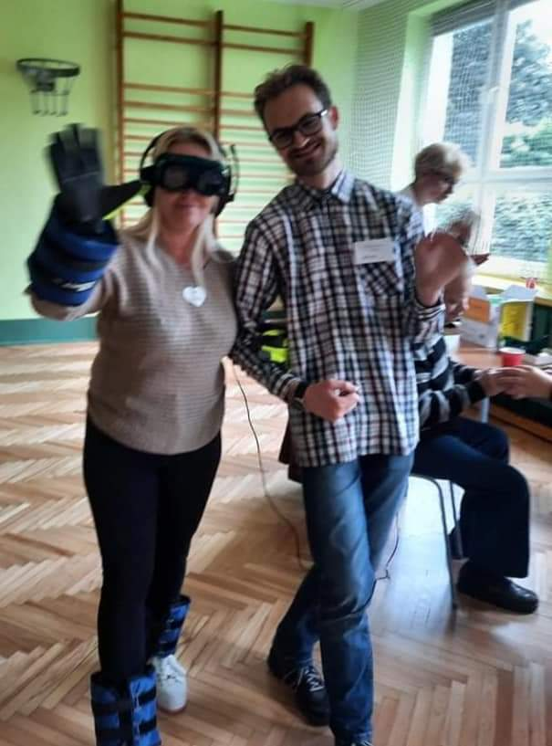

Wydarzenia
Cykliczne spotkania
Zapraszamy na sobotnie zajęcia dla osób z problemami z pamięcią.Zapewniamy opiekę oraz zajęcia terapeutyczne prowadzone przez doświadczonych specjalistów z dziedziny fizjoterapii, terapii zajęciowej oraz psychologii, wykorzystując przy tym między innymi metody arte- i muzykoterapeutyczne. Stawiamy sobie za cel polepszenie orientacji w rzeczywistości naszych podopiecznych, ponadto zapobieganie ich izolacji społecznej spowodowanej chorobą.
Równocześnie zapraszamy opiekunów chętnych do udziału w grupie wsparcia lub uzyskania porad dotyczących trudności, jakie stawia przed nimi opieka nad osobą chorą na demencję.
Zapewniamy opiekę w soboty od godziny 9:00 do 14:00.
Koszt jednego spotkania to 50 zł.
Wsparcie dla opiekunów jest bezpłatne.
Fundacja może odstąpić od pobierania opłat w związku z trudną sytuacją materialną podopiecznego.
Projekt jest współfinansowany przez Urząd Miasta Katowice.
Zapraszamy!
Dzień otwarty naszej fundacji
18 wrzesień 2021 r. Szkoła Podstawowa Nr 61 im. Polskich Kawalerów Maltańskich Specjalnej w Katowicach ul. Kołobrzeska 8

Zapraszamy do współpracy